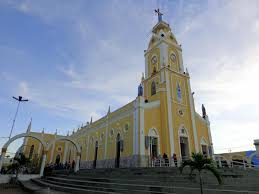
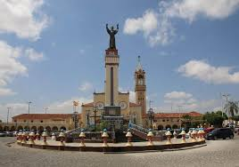
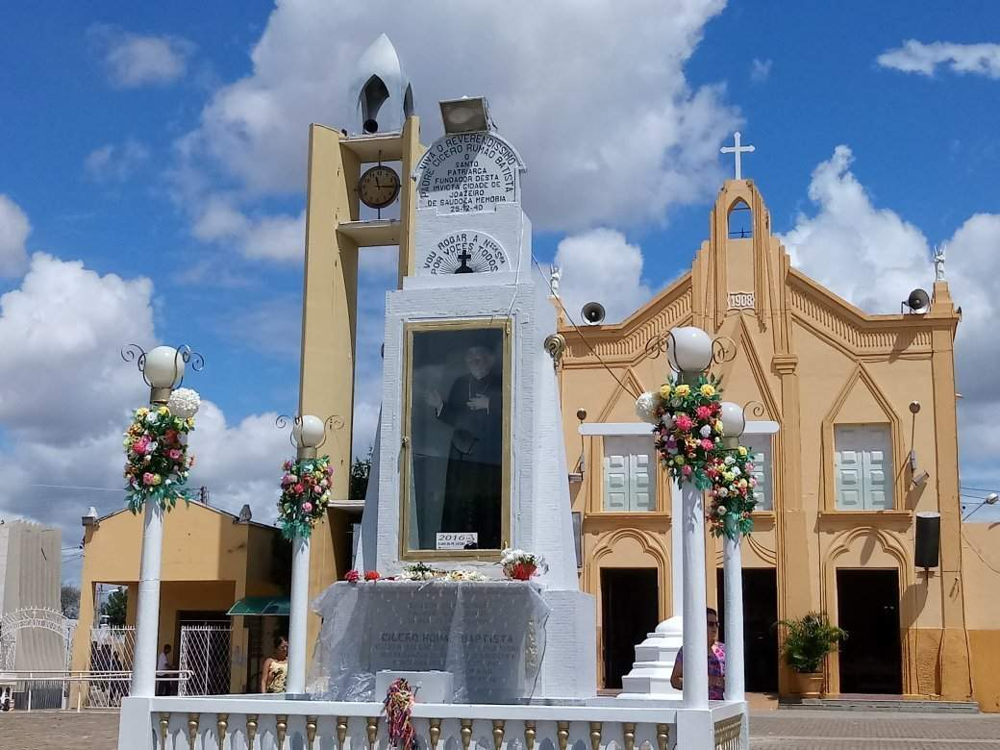
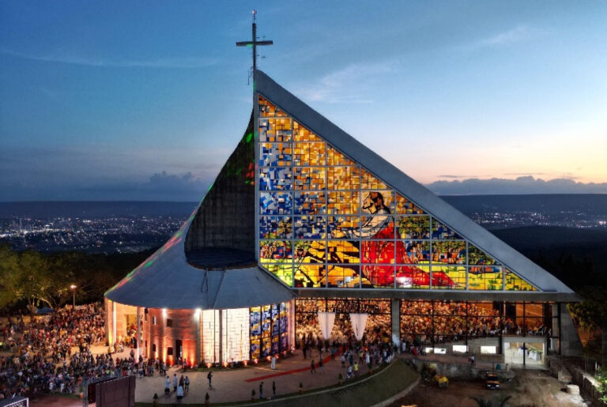
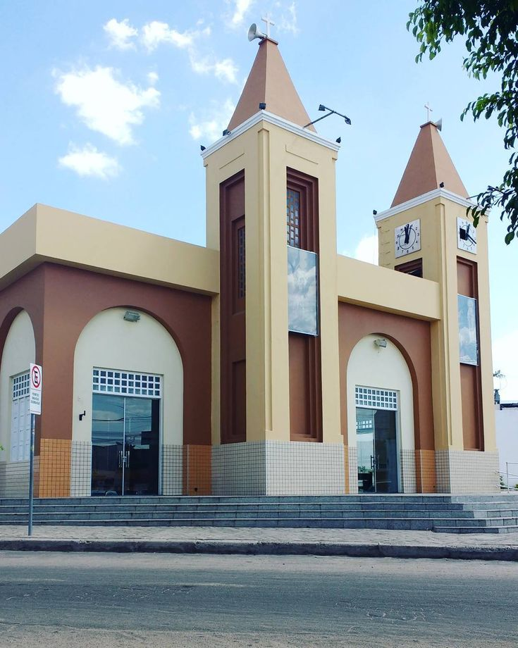

INÍCIO
CRATO
JUAZEIRO DO NORTE
BARBALHA
Locais Religiosos
Locais Turísticos
Restaurantes e Bares
Hotéis e Pousadas
Categorias
Locais Religiosos
Locais Turísticos
Restaurantes e Bares
Hotéis e Pousadas

Basílica Nossa Senhora das Dores

Basílica dos Franciscanos
Mais Informações

Capela de Nossa Senhora do Perpétuo Socorro
Mais Informações
Santuário do Sagrado Coração de Jesus
Mais Informações

Igreja Bom Jesus do Horto
Mais Informações

Paroquia de Nossa Senhora de Lourdes
Mais Informações